D90影像――各种花花
首页
抱朴守静
#1 D90影像――各种花花 作者：猪小姐 发表时间：2011-8-4 21:49:57
相机：尼康D90
镜头：尼康 16-85 F3.5-5.6G VR
作者：猪先生
拍摄地点：福州市各大公园
拍摄时间：09年秋至11年夏，猪先生拍摄成长见证。
来源：自家相册
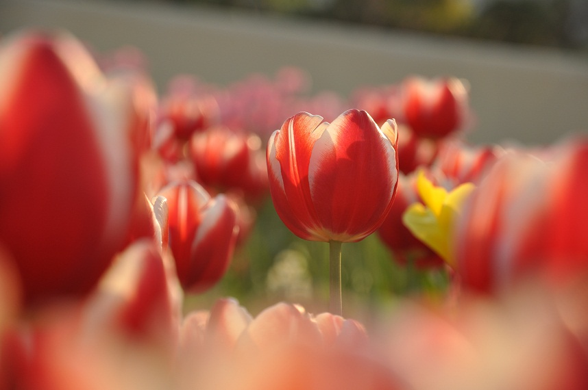
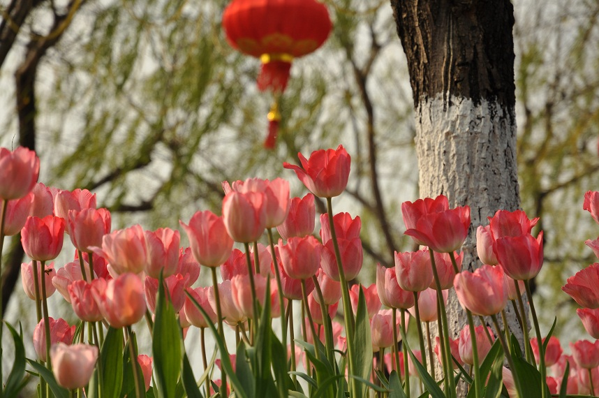
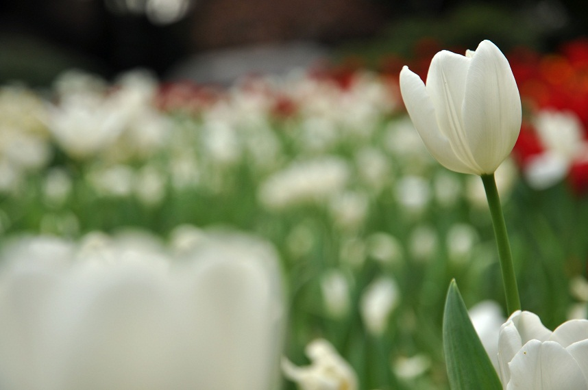
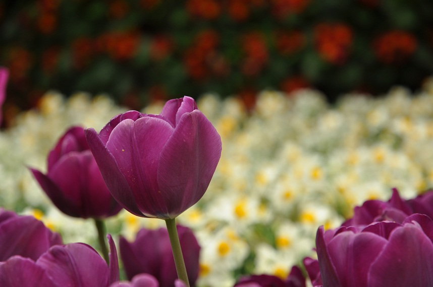
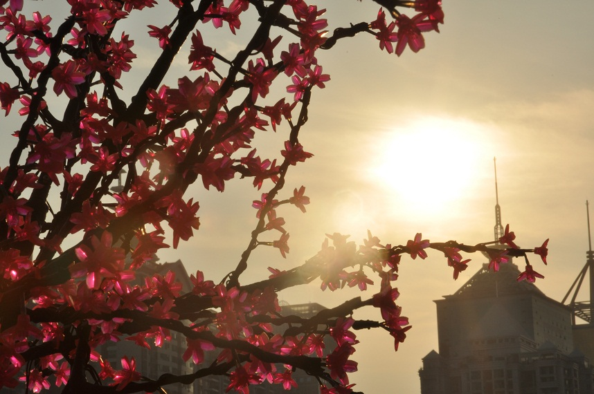
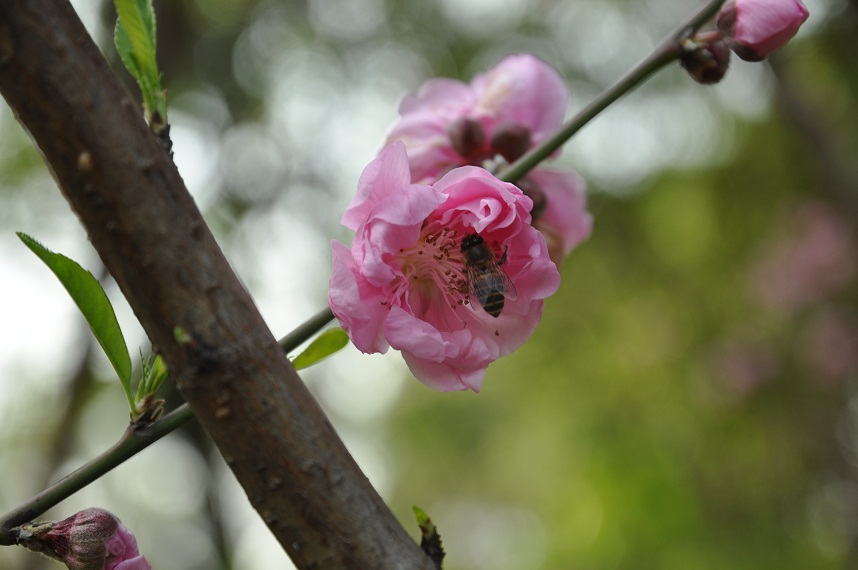
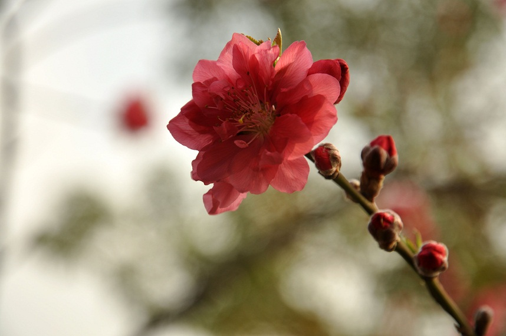
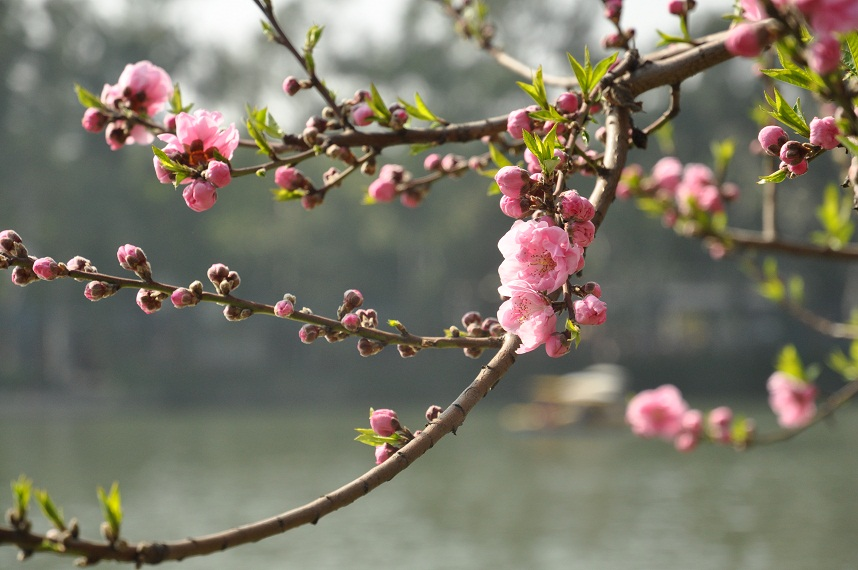
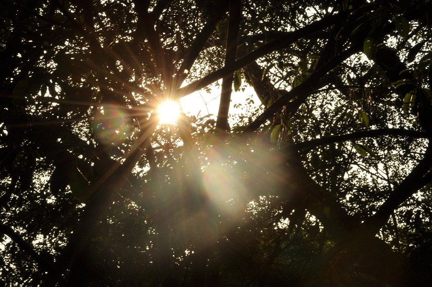
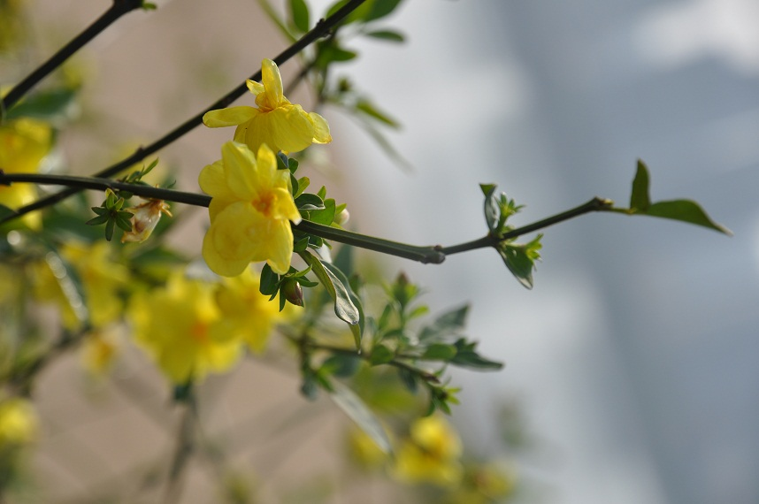
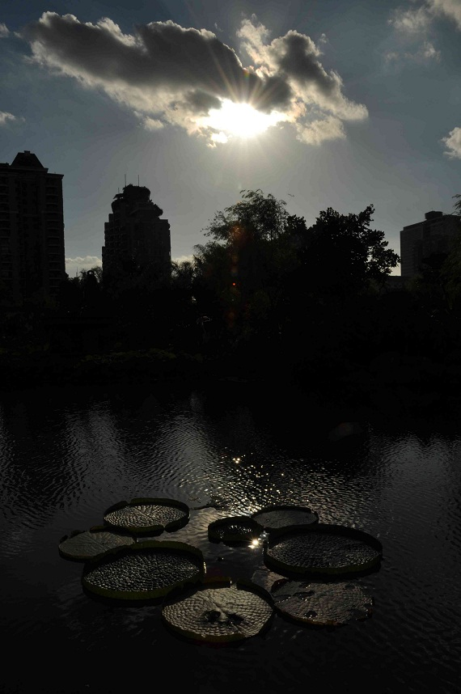
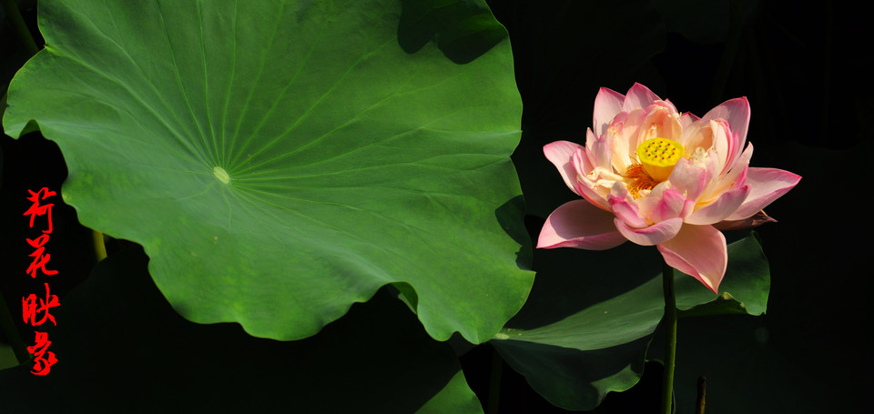
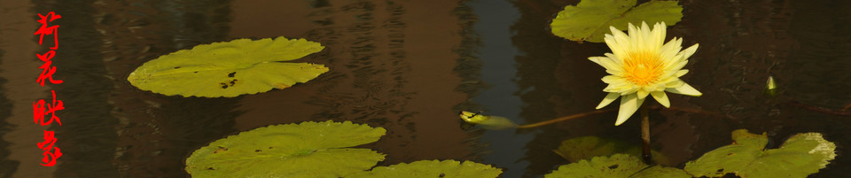 ［ 微微一笑 于 2011-8-4 22:06:30 时花20金币送鲜花一朵］
［ 蓝天蓝 于 2011-8-4 23:29:30 时花20金币送鲜花一朵］
#2 Re:D90影像――各种花花 作者：梧桐风 发表时间：2011-8-4 23:32:19
真不错，沙发
#3 Re:D90影像――各种花花 作者：蓝天蓝 发表时间：2011-8-4 23:38:12
沙发本来是我的，不是怎么坐上了，就无法显示网页了，回来就变成 板凳了
#4 Re:D90影像――各种花花 作者：猪小姐 发表时间：2011-8-5 10:05:57
把他踹下去。。。
#5 Re:D90影像――各种花花 作者：掌棋如烟 发表时间：2011-8-5 11:12:48
我就喜欢郁金香,特别是白色的
#6 Re:D90影像――各种花花 作者：润土 发表时间：2011-8-5 11:15:25
为了10金币，你们懂的。
#7 Re:D90影像――各种花花 作者：猪小姐 发表时间：2011-8-5 11:18:07
丸子让大家都变成赌鬼啦s_t。10块钱。。。应该够五百了。。。